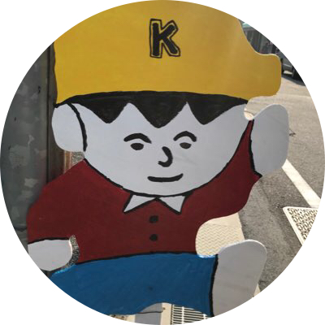

PROFILE

はじめまして。エンジニアを目指している31歳の末吉と申します。
これまでは営業として頑張っていましたが、以前から強い興味を持っていたプログラミングの世界に思い切って飛び込みました！
現在はプログラミングスクールに通いながらプログラミングのレベルを上げるために、スクールで講師のアルバイトをしています。
趣味はフットサル、漫画を読むこと、お酒を飲むこと。まだまだ駆け出しですが、日々学びながら一人前のエンジニアを目指しています！